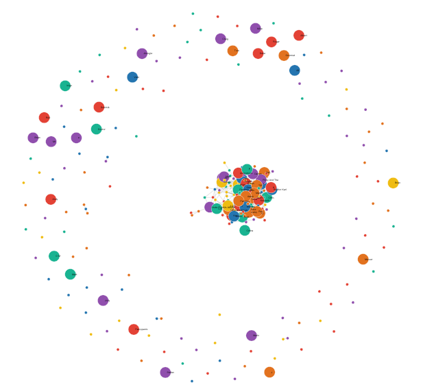
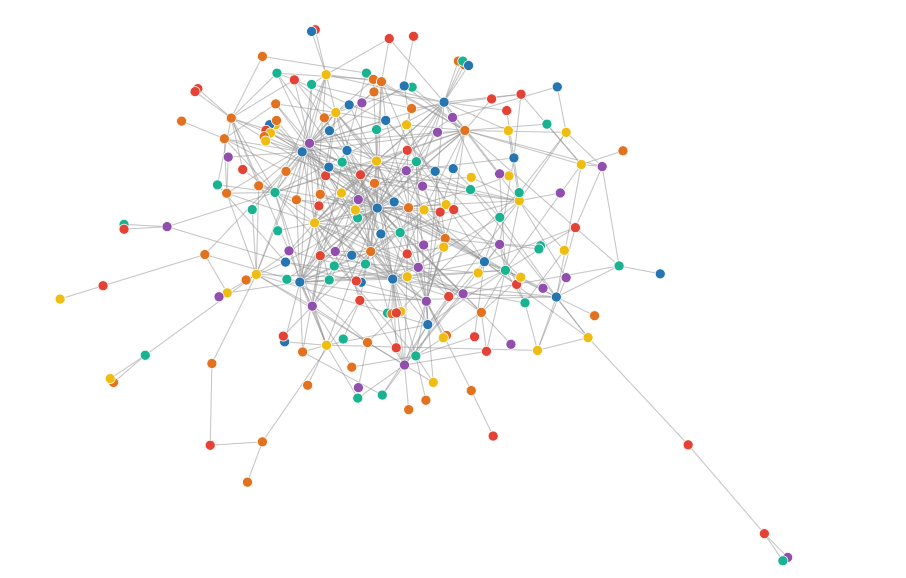
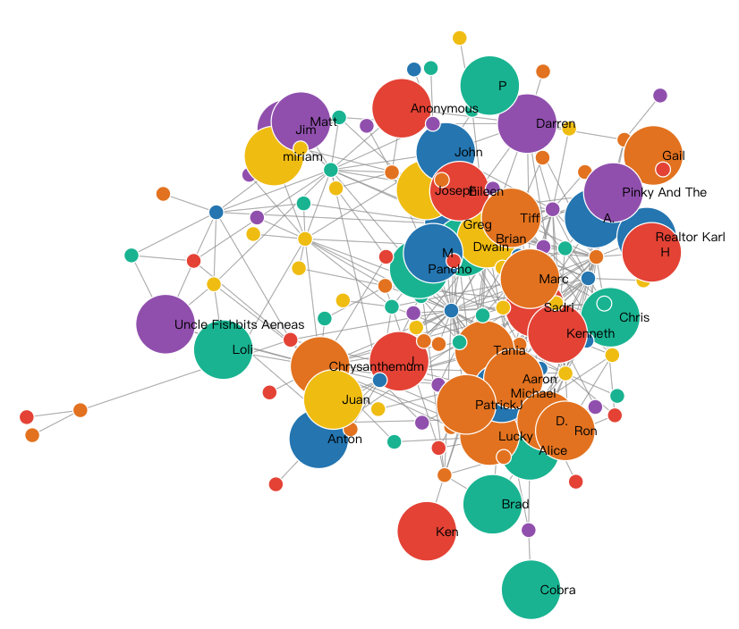

In Yelp, people have fun.
One of the greatest things about Yelp is the fact that the review system isn’t anonymous. Whenever a person goes on Yelp, they know that these are real people (most of the time) that are writing the reviews, and thus, it makes the actual review system a lot more trustworthy. They also did a good job of capitalizing on what previous companies were doing because they knew that people love sharing their opinions.
In doing so, Yelp also allow people to appraise or give comments based on other users' comments like telling others that their comments are cool, fun, funny and useful, and afterwards to "title" users.
Yelp also allow people to appraise or give comments based on other users' comments.s
From this chart, we could see that Yelp is not only a recommendation system but also an application where people could communication. It is a small society of foods and fashions.
There is so much fun.
Elite users
Some of the users are quite popular on Yelp. They got large amount of comments and stars for their valuable and useful funny reviews for foods, shops or fachions. These people, we defined them as Elite.
To classify users into different types of Elite users, we adopt Gaussian Mixture Model.
[WIKI] In statistics, a mixture model is a probabilistic model for representing the presence of subpopulations within an overall population, without requiring that an observed data set should identify the sub-population to which an individual observation belongs. Formally a mixture model corresponds to the mixture distribution that represents the probability distribution of observations in the overall population. However, while problems associated with "mixture distributions" relate to deriving the properties of the overall population from those of the sub-populations, "mixture models" are used to make statistical inferences about the properties of the sub-populations given only observations on the pooled population, without sub-population identity information.
Here is a scratch about the algorithm and decision rules.

Finally, we divide all of the users into mainly 5 types: cool elite, fun elite, funny elite, useful elite and none(No comments at all).
Number of each type of users.
We are quite interested in how elite users are communicate with each others:
Will the elite more likely to be friend with elite?
Will elite users of the same type clustering together?
Next we will use their friend relationship and types of elite to build up a social network.
Elite user social network
A social network is a social structure made up of a set of social actors (such as individuals or organizations), sets of dyadic ties, and other social interactions between actors. The social network perspective provides a set of methods for analyzing the structure of whole social entities as well as a variety of theories explaining the patterns observed in these structures
There is a group of centroids in the large social networks. In the whole network, clusters and individual users exist together. In this section we only focus on the connected graph.
We generated a social network graph of the top elite user which has the largest score in our Gaussian Mixture Model.
Static Social Network Graph.
In the above graph, the different color of dots represents different types of elite users. Different nodes are linked together if they are friends. We could figure out that the whole social network is quite stochastic in the term of types of elite.
If we further use the size of each node to represent the count of reviews that user gives, the social network will be just like the following graph.
Weighted Static Social Network Graph.
When we drew this social network, nodes in the middle tends to have more friends, (in the above social network, node Pancho has the most friends in this cluster). Therefore, we could figure out that number of reviews and number of friends are not so co-related to each other.